Published: 2023-09-13
Original link: https://www.cnphotos.net/academy/show-150.html
■ Interviewed | Wu Qiang
■ Reporter | Zhang Yue
■ Editor | Zhou Yimeng
■ Editor-in-chief | Chen Xiaojun
The CNPhotos Top-Ten Photographers award selects the best photography of each year. It encourages and honors excellent photographers who have made outstanding achievements in artistic photography. It drives photographers to create more work that reflects the voice of the new era, shows the struggle of the people, lifts the national spirit, and shapes noble feeling.
For the 5th CNPhotos Top-Ten Photographers award of 2022, 191 portfolios by 173 authors were published on the CNPhotos public platform or submitted directly. After the authors confirmed their entry, the works were ranked by read count, likes, and valid comments, from high to low. Together with a review of the work depth, artistry, value guidance, spiritual lead, and aesthetic insight, 64 photographers were shortlisted.
After a selected-works display, a public vote, a final review by a committee of famous photographers, experts, and scholars, and a public notice period, the year top-ten photographers and nominees were confirmed.
To further explore and show the classic work and creative journey of photographers, and to build a wider space for display and exchange, CNPhotos will soon send reporters and editors to interview the top-ten photographers. These interviewstell the stories behind the work. An album of the CNPhotos Top-Ten Photographers will be published later.
This issue features: an interview with Wu Qiang, the hutong photographer who records her home without nostalgia.
— Editor's note
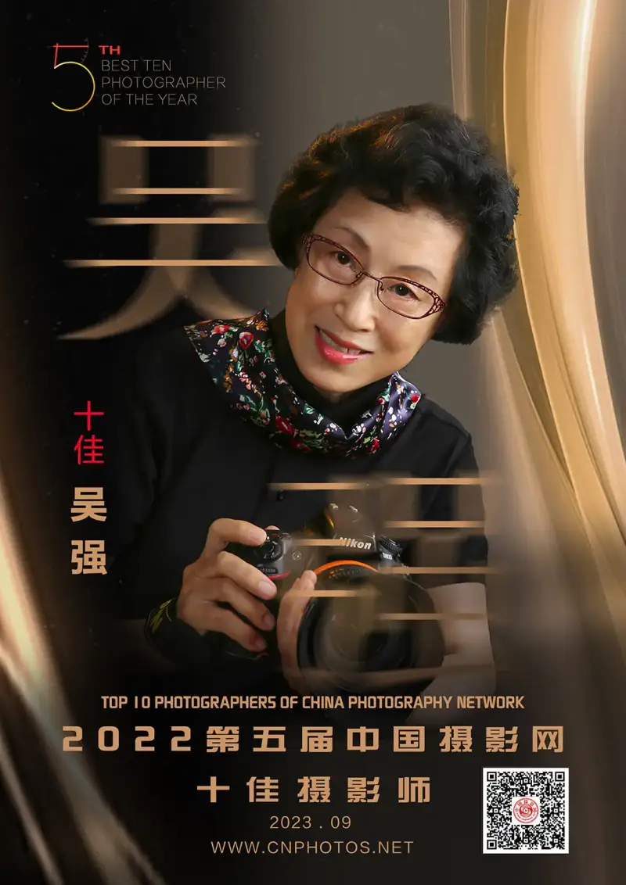
Wu Qiang is a member of the China Photographers Association, the China Society of Art Photography, and the Chinese Women Photographers Association. In 1989 she began full-time photography at the Beijing Dongcheng District News Center.
She published Learning Photography in 1996 and the Wu Qiang Photo Collection in 1999. In 2003 she became a signed photographer for Xinhua News Agency. In 2018 she won the Golden Road Award of the China Society of Art Photography. In 2019 she held a solo show, Impression of Chaoyangmen: Traces of Time on Chaoyangmen Nanxiaojie, at the Shijia Hutong Museum. Her series The Night-Soil Carriers in a Woman Photographer's Lens entered the long-observation section of the 27th National Photography Art Exhibition, and her series Neighborhood Committees in the Capital entered the documentary long-observation section of the 28th National Photography Art Exhibition. Her work entered Anti-Epidemic Stories Through the Lens of 100 Photographers (Artron, 2020) and was collected by the National Museum of China. She has won the Silver Collection Award of the 3rd China Photo Contest (2019), the Xu Xiaobing Cup Documentary Photography Award (2020), and the GPU Bronze Medal of the 5th International Digital Biennale of Photojournalists (2021). In 2023 she was named a CNPhotos top-ten photographer.
Zhang Yue (CNPhotos reporter, ZY): First, congratulations on winning first place among this year's top-ten photographers with your series Neighborhood Committees in the Capital. This work was also selected for the Xu Xiaobing Cup Chinese Documentary Photography Exhibition and the long-observation section of the 28th National Exhibition. What led you to start this subject of the community neighborhood committees?
Wu Qiang (CNPhotos top-ten photographer, WQ):On the eve of National Day in 1982, I was riding my bike in Dongcheng, taking photos with my first film camera. I shot my first photo of a neighborhood committee, two older women turning their heads. This should be my first representative work. I saw two older women on duty, chatted with them for a while, and was about to shoot them from the front. Just then a young man walked by, and both women's eyes at once followed him with alertness.
In 1982 Beijing had few outsiders. For the people in a small hutong, these two committee workers would know everyone well, and they must have felt a stranger had come. This photo shows the feeling people had toward strangers in that era. Now so many outsiders have come, and the courtyards and hutongs are full of them. That mindset is gone now. In 1982, you could only catch the committee on duty while you walked the streets. By 1989, after I moved to the Dongcheng News Center, I covered the 10 subdistricts of Dongcheng, each with seven or eight committees. At that time the main activities of the 10 subdistricts took place in the committees.
The neighborhood committee is a grassroots mass self-governing body, and an important bridge between the Party and the government and the people. It plays a key role in building and serving urban communities. At that time, our whole Dongcheng News Center had only me for photography, and the workload was very heavy. I had to shoot every visit by central and city leaders to Dongcheng, and also watch the subdistricts and businesses below. But I always set aside a slot for the committee subject. In 1982 the committees were all older women with little education. As times advanced, the committees changed in function and in the makeup of their staff. Now the workers are younger and more energetic, and their education has reached college level or above.
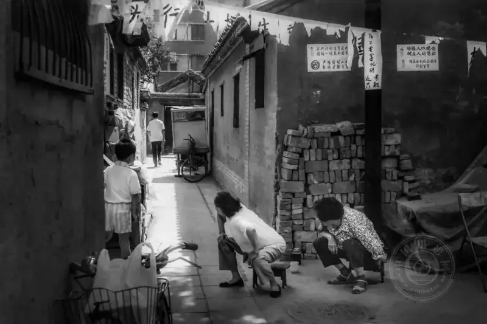
Neighborhood Committees in the Capital
1982, Pudusi Hutong, Beijing.
Two committee volunteers on duty watch a strange man.
(Shot on film)
ZY: Neighborhood Committees in the Capital, Women of the Hutong, Night-Soil Carriers in the Capital, and Chaoyangmen Nanxiaojie are all smaller subjects within your big project Light and Shadow in the Four-Nine City. What does Four-Nine City mean? Does it carry a special meaning?
WQ:Four-Nine City is the combined name for the four gates of the imperial city and the nine gates of the inner city. The four imperial gates are Tiananmen, Di'anmen, Dong'anmen, and Xi'anmen. The nine inner gates are Zhengyangmen (Qianmen), Chongwenmen, Xuanwumen, Chaoyangmen, Fuchengmen, Dongzhimen, Xizhimen, Andingmen, and Deshengmen. Why is the title Light and Shadow in the Four-Nine City? It refers to shooting the center of the city inside the second ring road.
I was born in Xiang'er Hutong in Dongcheng, inside the Four-Nine City. I went to primary and middle school there. Later I was assigned to the Beijing Shuangye Sweater and Shirt Factory in Caichang Hutong, on the west side of Wangfujing Street. In the late 1960s, many sent-down youth went to the countryside. Because two of our family's three children were sent-down youth, we were allowed to keep one child at home, so I stayed. I made finished goods, shirts and sweaters, for more than ten years. Then I married. My husband lived in Dongbanqiao Hutong in Jingshan subdistrict, inside the imperial city wall. You see, even when I married I did not leave the hutongs.
Later, when classes resumed, I taught myself middle and high school, and passed the entrance exam to the All-China Journalists Association Staff News College. I studied there for three years, and after graduation I was transferred to the Dongcheng News Center, which belongs to the Dongcheng district committee and government. We all belonged to the propaganda department of the district committee. Where was the Dongcheng district committee? In Qianliang Hutong, inside the Four-Nine City. I worked there until I retired. So from birth to school, and through two job changes, I never left the hutongs inside the Four-Nine City. Strictly speaking it is a bond. All my feelings are here, and all my footprints of growth are here, so my subject matter is bound to be here.
Because I have shot for many years and shot so much, after I retired I wanted to organize these images. I thought of a big title, Light and Shadow in the Four-Nine City, divided into countless small subjects. I am still producing them, and have now made more than 150. They reflect the rapid changes of Beijing inside the Four-Nine City, and the ordinary people here. You could say it is the life inside the second ring road.
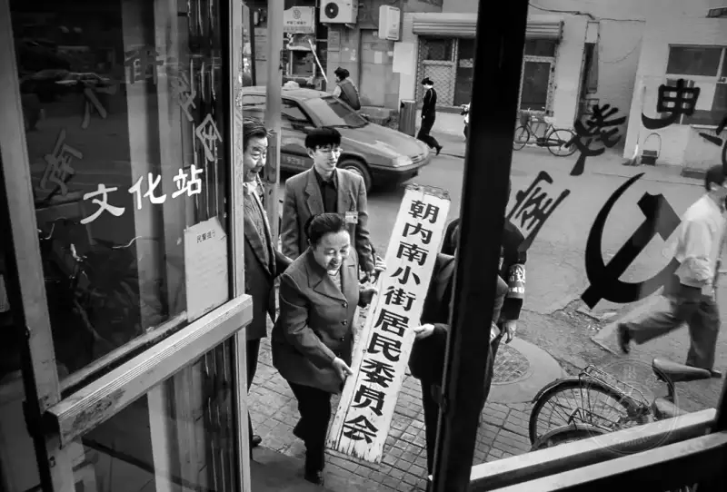
Neighborhood Committees in the Capital
2002, Chaoyangmen Nanxiaojie, as the road is widened.
The committee office must move.
The committee head takes down the committee sign and moves to the new site.
(Shot on film)
ZY: Your work mostly records the changes of Beijing, and the subjects you choose around the central axis and nearby follow your own path in life. Besides this, what other creative habits do you have?
WQ:The question of creative habit is still tied to my path in life. I am an ordinary person. I need to exercise in the morning, buy vegetables, cook, and read. The normal life of a Beijing resident is my life. So shooting their path, their scenes and content, is my habit.
As someone who has lived most of her life in Beijing, I know the lives of its people very well. I know their joys and sorrows, their care for their elders, their love for their children, and their devotion to the next generation. I raised my grandson through middle school. He also studied in the hutongs, and now he is in high school at Beijing No. 2, in his final, very intense year. In this city, in our life, as a woman I am a grandmother, a wife, and a mother. These are my life, and I express them. That is my habit.
In other ways, such as specific equipment, I do not like to change the things I use easily. However expensive the gear, you still need time to get used to it. I also like to go out alone, not in a crowd, because while I create I watch the subject. If I chat and talk with people, I may miss the moment. I do not follow a big group around the Four-Nine City. While shooting, I also do not like to change lenses. I use one lens from start to finish and catch moments.
Wandering around the Four-Nine City, I ride an electric bike, a bicycle, or the bus. I definitely do not drive, because it is easier to shoot this way. As I said, I have done what a woman's role requires, and in my work I like to think, create, and innovate on my own.
ZY: You have shot Neighborhood Committees in the Capital for 40 years. Over such a long span, how did you change psychologically and creatively?
WQ:When I shot my first committee photo, I did not have this subject in mind. My thinking, education, and understanding had not reached that level. Only as I learned more about photography and went deeper did I gradually settle on the subject of Neighborhood Committees in the Capital. Once I had it in mind, I kept adding work to it. During the pandemic, even though I had retired, I still kept in touch with the committees, to find ways to record the effort the directors put in during the outbreak.
In method, I moved from press photography to humanistic documentary. My early shooting was for publicity and mostly staged. When I moved into humanistic documentary, I dropped that publicity feel and expressed more of my own feeling. Everything flows naturally, and I catch it.
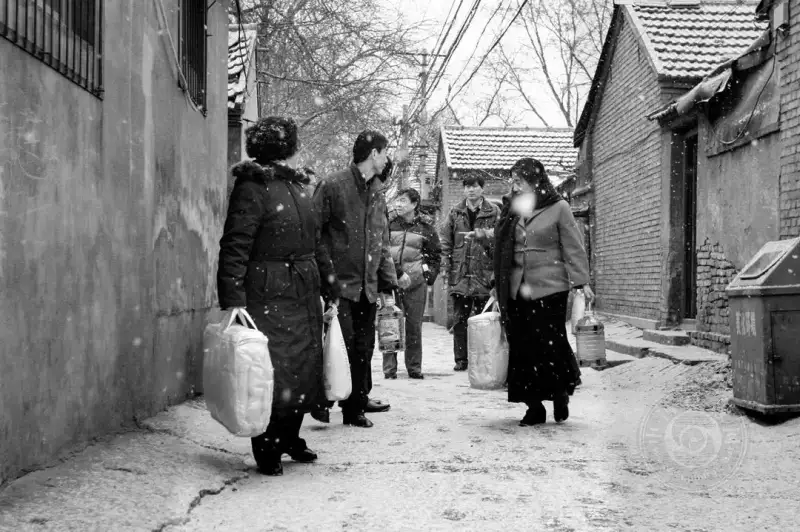
Neighborhood Committees in the Capital
Before the 2005 Spring Festival,
staff of the Xinzhongjie community committee in Dongzhimen subdistrict, together with officials of the Dongcheng civil affairs bureau,
visit poor families in their area.
ZY: Your work is anchored in humanistic documentary, and you do not favor staging. How did this view form?
WQ:The committee's work mainly supports the subdistrict, the subdistrict supports the district government, the district supports the city leaders, and the city supports the central government. So the photos of that time had a strong publicity feel. Most of what I shot while working had this: it could not leave a certain theme, and the frame had to look good. That is the character of Chinese press photography.
While I worked, I was also a signed photographer for Xinhua and a contributing photographer for the Beijing Daily and Evening News Group. I had to send Dongcheng material to Beijing Daily, Beijing Evening News, and Xinhua, so I had to fit the needs of the papers and complete my assignments.
But after I retired, I moved from press style to humanistic documentary. Humanistic documentary does not require you to arrange or stage the people on site. Everything is natural, and only such a frame is the most real, vivid, and meaningful. It stresses the inner feeling of the author. You just shoot. There is no assignment, no pressure, and no shooting for contests or awards. It is purely a private inner monologue.
I realized that the Chinese press style does not suit humanistic documentary, but the method is really hard to change. I have to consciously overcome my own shortcomings.
ZY: Photography is a personal thing. Has your photography been influenced by others?
WQ:Twenty years of press work gave me a base: dealing with people and liking to shoot people. But humanistic documentary and press documentary are two different things. Humanistic documentary can form a subject. Beyond dealing with people, I study the work of masters at home and abroad, whether in exhibitions or in their work, very carefully.
As for subjects, Hei Ming's Walking Through Youth influenced me a lot at the time. He found this subject to shoot, and it reflects society and fate. It also happens to be the story of our era. My sister and brother were both sent-down youth, so I felt it deeply.
I think it was in the 1980s or 1990s, at some exhibition, or when he came to Dongcheng to shoot something, that we talked. He said I should watch what others do not see. After that talk, this set of committees came to mind, but I did not have more contact later. Later I watched him keep producing subjects, such as Citizen Memory, but only through books and magazines.
In 1989 I joined the news center, and by then the subjects of Wang Wenlan and Xie Hailong had come out. In the early 1990s, China Photography magazine published a few of my committee photos, and my committee subject slowly began to grow. Together with that talk with Hei Ming, although I said nothing, the committee in my mind became something I could focus on.
Like those teachers, Weng Naiqiang, who came from that same era, also influenced me a lot. Teacher Weng has many very natural works. He left a record of old Beijing, such as what it looked like in the 1960s and 1970s, but he had no subject of his own.
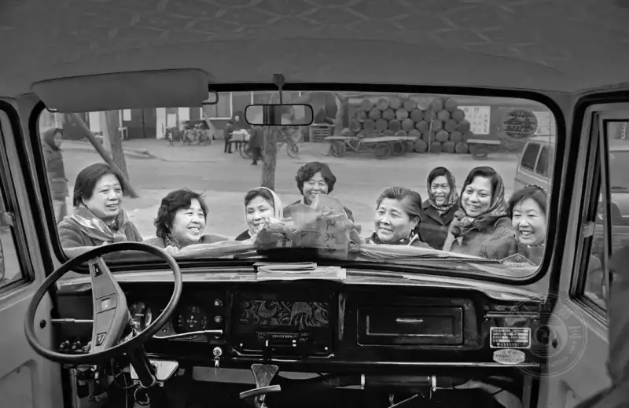
Neighborhood Committees in the Capital
1997, the Andeli committee in Hepingli subdistrict gets its own shared van.
A committee with a car was rare then.
(Shot on film)
ZY: Among similar subjects, what is unique about your work? For example, Shang Junyi shot Daily Life in the Hutong, and Jia Yong shot Qianmen.
WQ:There are a few people who keep shooting old Beijing and shoot it well, and I know them fairly well, but our specific content and methods still differ.
Inside the second ring road, whether old or modern, urban renewal and the Beijing climate are all in my work. My subjects are broad, and so is my content. Jia Yong has a shop sign on Qianmen West Street called Uncle Jia's Luzhu Huoshao, and he shoots the Qianmen area a lot. In method, I like Shang Junyi's way of not disturbing the subject and catching life as it is. The biggest highlight of Shang Junyi's book is its language, all in the Beijing accent and flavor. For example, Have you eaten? does not really ask if you have eaten; it is a greeting.
ZY: Much of the Four-Nine City series is about the everyday talk of ordinary people. Has anyone said your work covers too much, is too casual, or progresses too fast?
WQ:The Four-Nine City sounds small, but what it really holds is very many and very mixed. But this is all my daily shooting. Besides what I shot while working, I am still shooting now, so the region is here, within this range. Strictly, Light and Shadow in the Four-Nine City is mainly Dongcheng and Xicheng districts, with Dongcheng as the focus, and it does not include Chaoyang or Haidian.
But now some of my shooting has gone outside the frame, because Beijing is a big Beijing, always expanding outward and growing larger. Many events in Beijing are not inside the Four-Nine City. For example, the international fashion week at 798 that I now shoot is not held in the city center, but in Chaoyang.
ZY: Does photography today focus more on the subject or on the image itself?
WQ:The two cannot be separated. The image itself is decided in the moment of shooting, while the subject is a long thread in your mind. When I notice something, I see it as part of the subject I need. But the visual expression in that instant, your position, angle, or the light you use, is decided on the spot.
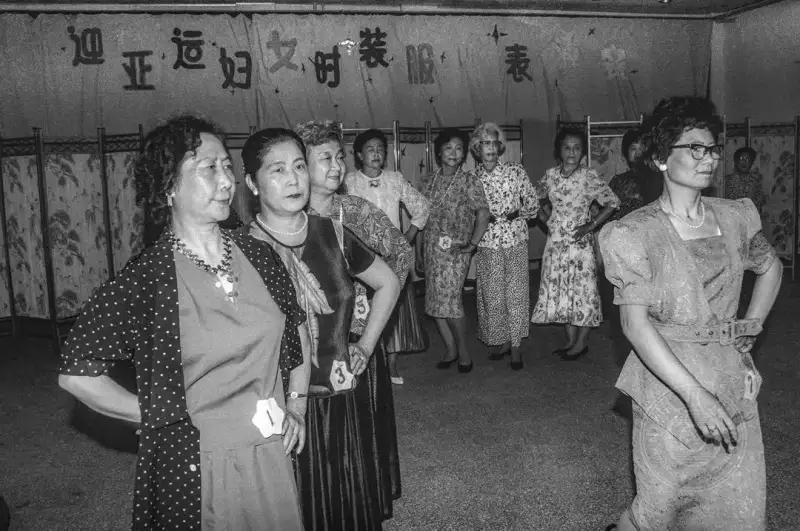
Neighborhood Committees in the Capital
1990, Dongsi subdistrict holds a women's fashion show to welcome the Asian Games.
Many committee directors take part enthusiastically.
(Shot on film)
ZY: What is your view of equipment?
WQ:My equipment is very simple, very different from people who collect gear. Now I have one kit, a Sony a7r3 with a 24-105mm lens. My first camera was a Seagull twin-lens, which took only 12 shots at a time and was not good for street shooting, so I gave it to my sister. When I joined the unit in 1989, I used a Ricoh for a while. Soon Canon came out, and many media used it. Our unit bought one of the first Canons, with almost a full set of lenses, but the pixel count was very low, and the long edge of a photo was only about 1000 pixels.
After I retired I switched to Nikon, with one short lens and one long lens, but the metal Nikons were heavy. I used them for quite a while after retiring. As I grew older, and as my subjects and the people I shot became clearer, I felt a 24-105mm was enough. It almost fully meets my street shooting needs. The Sony full-frame I use now is much lighter than the Nikon was.
At 70, I now feel even this Sony is heavy. Carrying it around my neck for hours is tiring. I keep thinking that a 15-150mm zoom would be ideal, but a very wide zoom range hurts quality. It would also need a flip screen, enough pixels, and a video function would be best.
Now I am also keeping up with the times. I shoot some video on my phone and edit short clips in Jianying. I hope to swap for a smaller, final camera when a suitable one comes, so I can keep shooting until I can no longer hold one.
ZY: You also pay attention to combining text and image in narrative. What do you see as the place and role of text in a photographic work?
WQ:Text is very important. Sometimes a photo does not need you to explain, because its language is in the image, but the information is limited. Then you need the five Ws of press: time, place, people, cause, process, and result, all recorded. Every image should have a text account. Many photographers are very weak in text, even in titles. This may offend some people, but it is true.
I think image and text complement each other. A photographer should hold a camera in one hand and a pen in the other. Some things an image cannot express need you to go further. The inner feeling you had while shooting, your likes and dislikes, if you want them to show, you must use text. Even if it does not add a finishing touch, it needs a supplement. Language is key. My own text is not great either. I only trained it after I began my own subjects. This is not an unbridgeable gap; it takes practice.
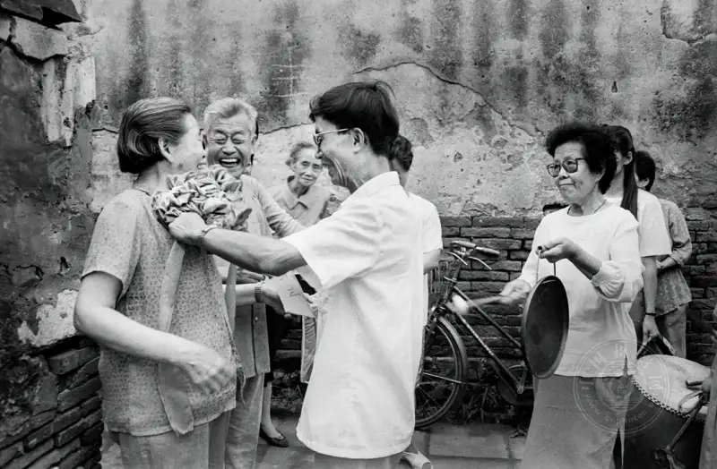
Neighborhood Committees in the Capital
1989, the heads of the Qiankang committee in Beixinqiao subdistrict,
with gongs and drums, pin a big red flower on the chest of the mother of a son who won merit.
(Shot on film)
ZY: Your photos are both black and white and color. On what do you decide which to use? Do you prefer black and white or color, and why?
WQ:It depends on the specific content. If you ask whether I like black and white or color, the world is in color and the subject is in color. As a faithful recorder, it is whatever color it is. I usually prefer natural color, so I should prefer color.
But black and white is also a way to stress tone, or to focus on black, white, and gray. I also do some black and white. In Light and Shadow in the Four-Nine City, I used black and white for the committee series, the Beijing uncles, and similar subjects. I feel that for the committee series, removing the color gives a touch of nostalgia.
Besides, I have followed this subject for 40 years. The early work was shot on black-and-white film, and black-and-white film cannot become color. I can only turn the later color work into black and white, so the whole tone is the same. Also, a grassroots body like the committee does not need much color to decorate it.
ZY: How does your career relate to your view of photography?
WQ:As a press photographer, you are the voice of the Party and a tool of publicity, so you should keep pace with the times and stay in line with the central Party, and the work must be positive. You can see that my work is positive. I think this is the basic requirement of a professional press photographer. I never do the dark, the negative, the passive, or even the unseemly. This ties back to my career. I do shoot some things, such as a fight or a homeless person, and I record them, but I do not publish them, because I feel the social effect would be bad. As a Party journalist, you must at least protect the image of the Party. I watch social problems and feel for ordinary people. I watch not only the high and grand, but also people at every level. People differ in job and rank, but as long as they eat by their labor and earn by their sweat, they are worth celebrating.
Besides, my old job required me to read books and papers, write a little, and pair text with images. This required a pen, and it slowly became a habit. This job need also sets me apart, in text, from some amateur photographers.
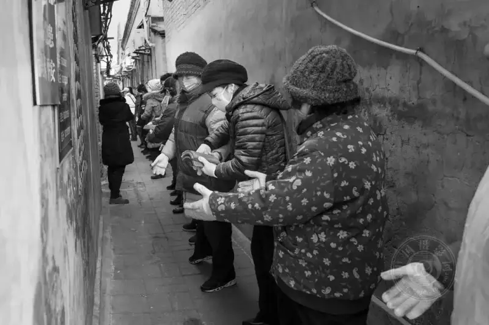
Neighborhood Committees in the Capital
December 28, 2019,
members of the Dongsi Ertiao community committee and volunteers do unpaid work in the hutong together.
ZY: What do you think matters most in humanistic documentary photography?
WQ:I think eight words matter most in humanistic documentary. First is truth and nature. You must not stage the false. You shoot a moment in the natural process of things. This is a question of attitude. Second is the accurate moment. The accurate moment carries years of accumulated experience. This is a technical question. When you arrive on site, you must catch the best and most typical moment.
ZY: Are you satisfied with this documentary way of shooting? Will your method change? Your subjects are now all the street life of Beijing. Will you take on other regions and content in future?
WQ:I am very satisfied, and it will not change. After so many years, it will not change easily. As long as I pick up a camera, it is still the habit I formed. Young people now use very advanced, exaggerated methods, and in photography there are doves and hawks, but I feel a mature photographer does not change her style easily.
Apart from Beijing, I have not considered shooting other places. I have shot in many other places too, and I have been to more than 50 countries. I shoot wherever I go, but I will not take the work I did abroad as my own subjects. It is only travel, a kind of record.
I hope to keep going with Light and Shadow in the Four-Nine City, as far as it goes. For subjects tied to the area inside the second ring road, I shoot what I can and do what I can, and I may leave something behind. The road of photography has no end. As long as I can walk it, I am in no hurry. I walk slowly, let things happen, and success comes naturally.
ZY: Did you expect to become the top of the year's top ten?
WQ:I did not. For contests, I usually submit and then do not think about it on purpose, because I have photographed for more than 40 years. At the start I certainly hoped to be selected in contest after contest, because joining the Beijing and China Photographers Associations had requirements. But as I am now, I have passed that stage. I still enter contests and pay attention, but the result after I submit is not something I dwell on. Still, when I learned I was selected and ranked first, I was very happy. Neighborhood Committees in the Capital ranked first for the first time.
I am already in my seventies, and many things matter less now. It is just that, on the road you travel, the road where you have kept to photography, it gives you a big surprise, a big encouragement, and a shot of energy.
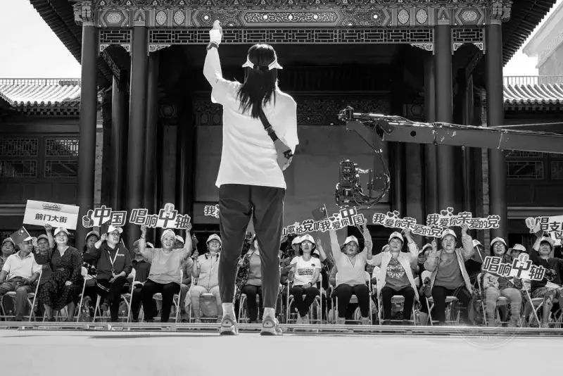
Neighborhood Committees in the Capital
June 5, 2021, at Guanghelou in Qianmen, Beijing.
A nearby community committee organizes residents
to welcome the centenary of the Party with a chorus.
ZY: Some see photography as a social responsibility, and others see it as a pastime that replaces square dancing, mahjong, or fishing. What is it to you?
WQ:On a high level it is a social responsibility, because it is a record of society with documentary value. People often leave me messages saying my work is positive. You cannot deny that shooting the changes in Beijing and the lives of ordinary people is a responsibility. But who gave you that responsibility? No one forces you to reflect this or that. It is a habit of observing or thinking that I formed, a life habit built over 40-plus years. I worked for 20-plus years, shot for more than ten before that, and still shoot after retiring. I enjoy the process, enjoy finding new subjects, enjoy adding a fine frame to one of my subjects, and enjoy shooting them accurately.
From another angle, I am retired now, and so many older men and women have picked up a camera to learn photography. I already have this advantage. As long as I pick up the camera and shoot, I will surely find my own unique point. Why would I not keep shooting! I have no reason to give it up, and I love it. Is this not the finest luxury after a meal? At my age, my health comes first. You cannot force anything. At this stage, I go with the flow. If I want to shoot today and feel well, I go and keep doing Light and Shadow in the Four-Nine City. If a health problem suddenly arises, then what must be set down will be set down. I keep both plans ready.
I keep going because of love. Always wanting to shoot is a desire, and I always make new finds in my subjects. To focus on one thing is really a trick for a long life.
ZY: Besides photography, what other hobbies do you have?
WQ:Besides photography I like to dance, stretching my body to the music. At 70, dancing keeps my posture different from people who do not dance. After I retired, I spend a fixed hour every morning learning various dances, such as the classical dances Butterfly Lovers and Wan Jiang, and also Mongolian dance. I learn whatever the teacher teaches. After an hour of dancing, I come back to images and photography.
ZY: Are most of the friends you see photographers? Do you often discuss photography together?
WQ:Yes, of course. I have many photographer friends in many photography organizations, and our talks are always about photography. Online, Dongcheng has a photography group of the association, and Xicheng and Chaoyang have their own associations and groups, as well as a Beijing city group. I am also in the Chinese Women Photographers Association group. People often share photography-related content from home and abroad, and I look at it, and save the very best.
Offline we also meet. For example, at this international photography week, the people who like to shoot fashion message each other about which day to go. You see, even in the rain today they are there, and yesterday too. Because I do not mainly shoot fashion, I plan to go when it is not raining. I only go there to catch what I need. I do not focus on the models on stage in their clothes. Our shooting points differ, but we share the information.
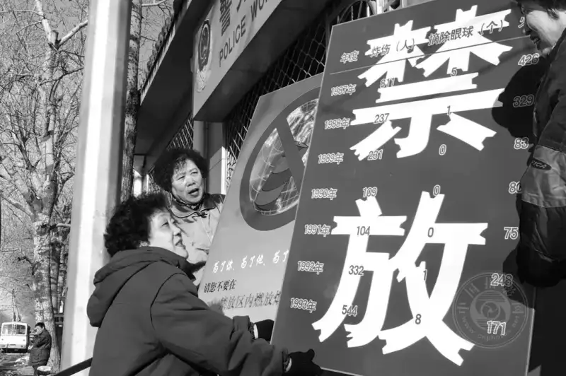
Neighborhood Committees in the Capital
December 2002, whenever the Spring Festival comes,
an important task of the Huangchenggen North Street committee
is to post notices banning fireworks, according to the regulations issued by Beijing.
ZY: You are also a member of the Chinese Women Photographers Association. Does being a woman give you an advantage or disadvantage in photography?
WQ:The Chinese Women Photographers Association was founded in 1995. I was one of the first members and one of the first board members. I served for four terms until I left, stepping down because of my age.
Women photographers have natural advantages that men cannot match. First is observation. A woman's observation has a very fine angle. Because I have been a mother and a grandmother, I also have a more loving state of mind. When the old Beijing Photography Correspondence School was founded, I was among its first students. That first class had more than 10,000 students, and ten outstanding students were chosen. I was one of the ten. My paper then was on the traits of women's photography. I felt then that women have broad maternal love, a heart with love and sympathy, and this is a woman's trait. Women also communicate easily with others. If I go somewhere to shoot and people stop me from entering, I talk with them slowly and do not easily raise their guard. If a man goes up to shoot, people grow wary. A woman gives people a sense of safety, and you can get things done. These are women's advantages.
The weak side is certainly that I have less physical strength than men. Otherwise I do not feel much difference from men. I almost always wander inside the city, in places I know. If I go away and leave Beijing, it is probably not alone; I go in a group to complete some work. Because you are not far away, and you shoot the things around you, when it gets dark or rains hard and you feel you cannot shoot, you can take shelter and go home. Apart from watching traffic safety on the road, there is little to be afraid of. I have not run into other problems.
ZY: You worked within the system. If a photographer in their twenties or thirties left the system to become a freelance photographer, do you think they could support their life and photography? Many young people and photography students want to know.
WQ:They could not support their life and photography. I needed to hold this iron rice bowl. Today, reporters in the official media pass layer upon layer of exams and study, and may even graduate from a top university. Once in, they have a fixed salary. They do their own job well, and then use their time to shoot more of their own work. I think this is the most realistic thing: you have to eat first.
Without an economic base, there are many problems ahead. A person in their twenties or thirties must start a family and build a career, right? If you follow the normal path of life, how do you do these things without an economic base? I would not give up the iron rice bowl to do self-media. Chinese media must develop within China's environment, and only on the condition that the government's voice is the mainstream can you develop and earn traffic.
Short video, I also try out and play with now and then, but I see it as a pastime outside my real job, or another skill. It will not be the main work of my life. That is how I see it. I am definitely a conservative.
ZY: How much time do you put into photography each day?
WQ:Working with images is the main theme of my life. I spend most of my time with the images on my computer and the moments in my camera. My spiritual anchor is here. Besides shooting, I organize images. If I stopped, I would feel uncomfortable. If I do not go out for a few days, I feel uncomfortable too.
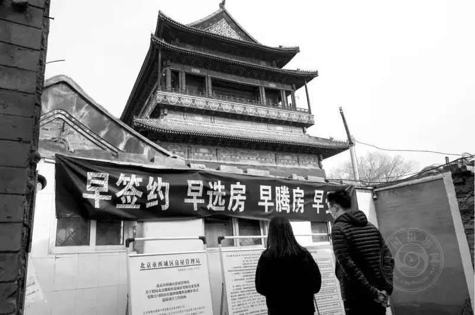
Neighborhood Committees in the Capital
March 25, 2021, a banner of the Xicheng housing administration is hung west of the Drum Tower.
Beijing's central axis enters the final push for world-heritage listing,
and nearby community committees fully support the action.
ZY: After so many years, what has photography brought you? What returns, spiritual and material?
WQ:The greatest return photography gave me is that it changed my fate and my life. If I had not studied press photography, I would be an ordinary worker. At that time, ordinary workers were laid off in their forties. Factories closed, merged, or were swallowed up, and you went home to a monthly wage of 600 or 800. But because I studied journalism and got a diploma, I was transferred to the Dongcheng News Center. At least I had an iron rice bowl, and I did the work I loved. In my later, retired years, it makes my spiritual life very full and very rewarding.
Also, in the old days, two years or more in government could get you an assigned apartment, which was the biggest material benefit. Other income came from fees. I was also a signed reporter for the media, and Xinhua paid quite well, all extra income. Contests also brought prize money. These are material, but they are not what I pursued. They came naturally.
ZY: What do you think documentary photography, or humanistic documentary, will be like in future? Will it change?
WQ:AI now hits the photography market very hard, but it mainly hits landscape photography. Documentary-style photography is not affected by this AI, because documentary requires truth, and the pixels cannot be changed. So the future style of documentary, I feel, cannot leave truth and nature, while the content will always change as society changes.
ZY: Thank you!
Postscript
A recorder of home without nostalgia: the hutong photographer Wu Qiang
Beijing is an ancient capital of civilization, with a flavor that has lasted for a thousand years. The Four-Nine City is its heart, and Wu Qiang was born here, studied here, and worked here. She has hardly left the Four-Nine City in her life. You could say this path is both a firm choice and a safe, fortunate fate.
Looking back at the invention of photography, it seemed to carry a gene of nostalgia from the start, because the camera records a present moment that is bound to pass, and over this span of time there is often also a movement in space. Many photographers go far away to look for poetry and dreams. But Wu Qiang has the divided, broken feeling of a wanderer. Beijing is her spiritual territory in photography. She has always focused on this territory and worked, lived, and created here. She is a recorder of home without nostalgia, and so her spirit always gives off a lifting air. In her work, the change of the era sweeps everything before it, and the working people are always creating actively, while her own creation, settled by the years, grows fuller and more confident.
Whether old shadows of the ancient city or the new face of the city, she has used her camera to record, over 40 years, the repeated changes of this city, also a city of dreams. But the road of photography has no end. She believes that if you keep going and let things be, success will come of itself. The era will change, but the spirit endures.
Zhang Yue
September 10, 2023
Zhang Yue
Reporter for CNPhotos.
Born in the 1990s, a Chinese woman based in Beijing.
Has published hundreds of thousands of words of arts criticism and political commentary.
Now studying for a master's degree in photography and digital media at the graduate school of the Chinese National Academy of Arts.
Has a special love for documentary photography.